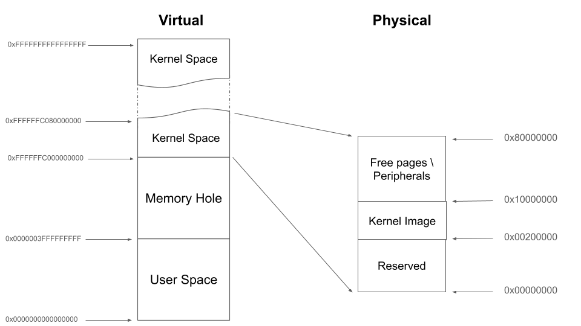
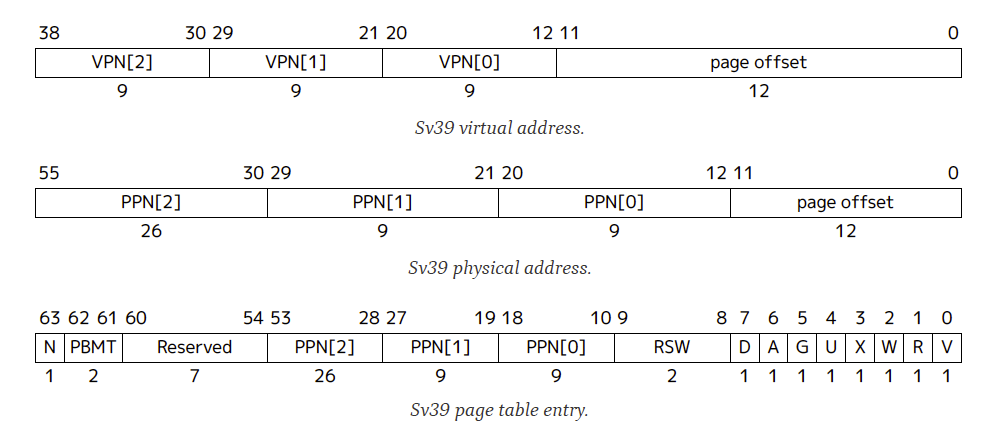

Lab 6: Virtual Memory#
Introduction#
Virtual memory provides isolated address spaces, so each user process can run in its address space without interfering with others.
In this lab, you need to initialize the memory management unit (MMU) and set up the address spaces for the kernel and user processes to achieve process isolation.
Goals of this lab#
Understand RISC-V Sv39 virtual memory system architecture.
Understand how the kernel manages memory for user processes.
Understand how demand paging works.
Understand how copy-on-write works.
Background#
Translation Levels#
Translating a virtual address to a physical address involves levels of translation. RISC-V Sv39 uses a three-level page table translation.
The top-level is page global directory (PGD), followed by page middle directory (PMD), and page table entry (PTE).
Page vs. Page Frame vs. Page Table#
Page: A chunk of virtual memory pointed to by one entry of a page table.
Page frame: A chunk of physical memory.
Page table: A page frame whose entries point to the next level page tables or pages. In this documentation, PGD, PMD, and PTE are all called page tables.
Page Entry Descriptor#
Each page table entry (PTE) contains the physical page number and flags describing access permissions and status.
RISC-V Sv39 Memory Layout#
In the 39-bit virtual address space of Sv39, the upper address space is usually for kernel mode, and the lower address space is for user mode.

Note
The entire accessible physical address space is linearly mapped to offset 0xffff_ffc0_0000_0000 for kernel access in this lab.
It simplifies the design.
Configuration#
RISC-V Sv39 uses 3-level page table with 4KB page size and 512 entries per table.
To keep everything simple, the following configuration is specified for this lab:
Paging mode: Sv39
Page size: 4KB
Virtual address space: 39-bit
Physical memory access via linear mapping in kernel space
No ASID support

Attributes Used in this Lab#
When setting up your page tables, you will need to manipulate the following descriptor flags:
Bit[0] V (Valid): Indicates the entry is valid.
Bit[1] R (Readable): Page is readable.
Bit[2] W (Writable): Page is writable.
Bit[3] X (Executable): Page is executable.
Bit[4] U (User): 1 for user mode accessible, 0 for kernel only.
Bit[5] G (Global): 1 if mapping is global.
Bit[6] A (Accessed): Set by hardware when the page is accessed.
Bit[7] D (Dirty): Set by hardware when the page is written.
Reference#
So far, we have briefly introduced the concept of virtual memory and RISC-V Sv39 virtual memory system architecture. For details, you can refer to:
12.4. Sv39: Page-Based 39-bit Virtual-Memory System of the RISC-V privileged architecture manual.
Basic Exercises#
Basic Exercise 1 - Virtual Memory in Kernel Space - 20%#
We provide a step-by-step tutorial to guide you to make your original kernel work with virtual memory. However, we only give the essential explanation in each step. For details, please refer to the manual.
SATP Register#
Paging is enabled by writing to the satp register. Its top 4 bits
select the translation mode (8 = Sv39), and the low 44 bits hold the
physical page number (PPN) of the root page table.
The following helpers are used in this lab:
#define SATP_SV39 (8UL << 60)
#define MAKE_SATP(pgd_pa) (SATP_SV39 | ((unsigned long)(pgd_pa) >> 12))
After populating pgd, write satp and flush any stale TLB
entries before the next instruction is fetched:
asm volatile(
"csrw satp, %0\n"
"sfence.vma zero, zero\n"
:
: "r"(MAKE_SATP(pgd))
: "memory"
);
Todo
Set up satp to enable virtual memory.
Memory Attributes#
In RISC-V, memory attributes like cacheability and permissions are managed through PTE bits and not separate attribute tables.
Use the following for this lab:
Kernel mapping: V-R-W-X-G-A-D
MMIO mapping: V-R-W-G-A
User mapping: V-U-A-D (set R/W/X as needed)
Identity Mapping#
Before enabling the MMU, set up the kernel page tables using 2 MiB pages at the PMD level. Each PMD entry maps a 2 MiB block, and 512 entries cover 1 GiB.
Build two parallel mappings:
Identity: VA = PA (temporary, dropped after boot)
Higher-half: VA = PA +
0xffff_ffc0_0000_0000(permanent kernel mapping)
setup_vm:
1. Build identity and higher-half mappings
2. Write to the satp register
3. Flush the TLB with sfence.vma
drop_identity_map:
1. Zero out the low-half PGD entries
2. Flush the TLB with sfence.vma
Todo
Implement identity mapping and dropping.
Warning
The identity mapping is temporary scaffolding. After transitioning
to the higher half, you must zero out the identity PGD entries.
Using Exercise 6.2 start.S for setup VM will receive 0 points for this part, even if the
kernel appears to run.
Map the Kernel Space#
You should map the kernel to the upper half of the virtual address space, starting from 0xffff_ffc0_0000_0000.
Modify your linker script:
SECTIONS
{
. = 0xffffffc000000000;
. += 0x00200000;
_start = .;
}
You should create page table entries mapping the kernel’s physical memory to this virtual region.
Todo
Modify linker script and create kernel-space mappings.
Note
Hard-coded addresses such as MMIO addresses should also be mapped in the upper address space.
Finer Granularity Paging#
Use 4KB pages for regions where fine-grained protection is needed. RISC-V supports 3-level paging: 4KB pages via PTE entries.
Map normal memory with readable/writable/executable bits as needed.
Map MMIO regions as non-executable and use volatile accesses to avoid speculative load.
Todo
Use 3-level mapping with finer granularity to distinguish MMIO and RAM.
Basic Exercise 2 - Virtual Memory in User Space - 40%#
PGD Allocation#
To isolate user processes, you should allocate a separate PGD for each user process.
Map the User Space#
For mapping user memory, walk through 3-level page tables:
PGD → PMD → PTE
Allocate intermediate tables as needed. Here is a simplified walk function:
static void pagewalk(unsigned long va, unsigned long pa, unsigned long prot) {
// Get current PGD
// Walk through level 2 (PGD) and level 1 (PMD)
for (int level = 2; level > 0; level--) {
...
}
// Reached level 0 (PTE)
...
}
Todo
Implement a page mapping function void map_pages(unsigned long va, unsigned long size, unsigned long pa, unsigned long prot). Use this function to map the user code at virtual address 0x0 and the user stack at 0x003f_ffff_f000 with their respective permission flags.
Note
User space uses 4KB pages in this lab, requiring PGD, PMD, and PTE.
Revisit Syscalls#
In Lab 5, user programs relied on custom linker scripts to prevent physical address overlaps, and child processes required distinct stack addresses. Virtual memory eliminates these restrictions. By using per-process page tables, you can now provide every user program with an identical virtual memory layout, mapping the same virtual addresses to isolated physical frames.
Todo
Reimplement the fork() and exec() system calls to properly utilize isolated virtual address spaces.
Context Switch#
To switch address spaces, write the process’s PGD to the satp register and flush TLB.
Todo
Implement address space switch using satp and sfence.vma.
Video Player#
Replace the user program used in Lab 5. The video player uses same syscalls as before.
Warning
Only if you can run video fluently as before will you receive all the points; otherwise, even though you implemented the system call correctly, you will receive no points in this section.
Todo
Make the video player run on virtual memory.
Advanced Exercises#
Advanced Exercise 1 - Mmap - 20%#
mmap() is a system call used to create memory regions for a user process.
Each region can be mapped to a file or to anonymous pages (i.e., page frames not related to any file) with specific access protections.
Users can create heap and memory-mapped regions using this system call.
The kernel can also use it to implement the program loader.
Memory regions such as .text and .data can be created by memory-mapped files.
Regions like .bss and the user stack can be created by anonymous page mapping.
Note
Because this lab does not use ELF files or actual files on a file system, you only need to implement anonymous page mapping.
API Specification#
void *mmap(void *addr, unsigned long length, int prot, int flags);
addr:If it is
NULL, the kernel chooses the starting address.If it is not
NULL: If the region overlaps with existing ones or is not page-aligned, treataddras a hint. Otherwise, useaddras the exact base of the new region.
length: The size of the mapping. It must be page-aligned (the kernel should round it up if it is not).prot: Specifies the access protection for the region:PROT_NONE: 0 (inaccessible)PROT_READ: 1 (readable)PROT_WRITE: 2 (writable)PROT_EXEC: 4 (executable)
flags: Memory mapping flags:MAP_ANONYMOUS: Create anonymous pages (used for stack/heap).MAP_POPULATE: Allocate physical pages immediately (optional if you are implementing demand paging).
Region Page Mapping#
If the user specifies MAP_POPULATE, the kernel should map physical pages immediately.
For anonymous pages:
Allocate the required page frames.
Map the region to the allocated frames using the requested protection bits.
Todo
Implement the mmap() system call. Syscall number: 13.
Note
You can verify your implementation with mmap_r (read test) or mmap_w (write test).
Advanced Exercise 2 - Page Fault Handler & Demand Paging - 15%#
So far, page frames have been pre-allocated. But a user program may reserve large address spaces (e.g., heap, mmap) and not use all of them. Pre-allocating wastes CPU time and memory.
Instead, allocate page frames on demand.
At process creation, only the PGD is allocated. When a page fault occurs:
If the fault address is not in any mapped region:
Generate a segmentation fault and terminate the process.
Log the error:
printf("[Segmentation fault]: Kill Process\n");
If the fault address is in a valid region:
Allocate a page frame and map only that page.
Log the translation:
printf("[Translation fault]: %lx\n", addr);
Todo
Implement the page fault handler for demand paging.
We have prepared a testing function within the updated user program to help you verify your logic. Run demand in your shell,
this command allocates an array and touches the memory boundaries to trigger page faults. You should see your translation fault logs printed out.
Advanced Exercise 3 - Copy on Write - 15%#
In your previous fork implementation, the kernel copies all page frames for the child.
But exec() usually follows fork(), meaning those frames may never be used. To optimize this, implement copy-on-write (CoW).
On Fork a New Process#
When a process forks, instead of copying all page frames, do the following:
Copy the page tables (PGD, etc.).
Mark all user PTE entries read-only, even if they were originally read-write.
Increment reference counts for each shared page frame.
On Page Write by Either Process#
If a process writes to an already mapped read-only page, a permission fault occurs. Then:
If the region is writable (copy-on-write):
Allocate a new frame
Copy the data
Update PTE to be writable and point to the new frame
Update reference count
Log the permission fault:
printf("[Permission fault]: %lx\n", addr);
Otherwise:
Generate a segmentation fault and terminate the process.
Log the error:
printf("[Segmentation fault]: Kill Process\n");
Note
Track reference counts per frame to determine when to free memory.
Todo
Implement copy-on-write mechanism. Your implementation should print the required log messages.